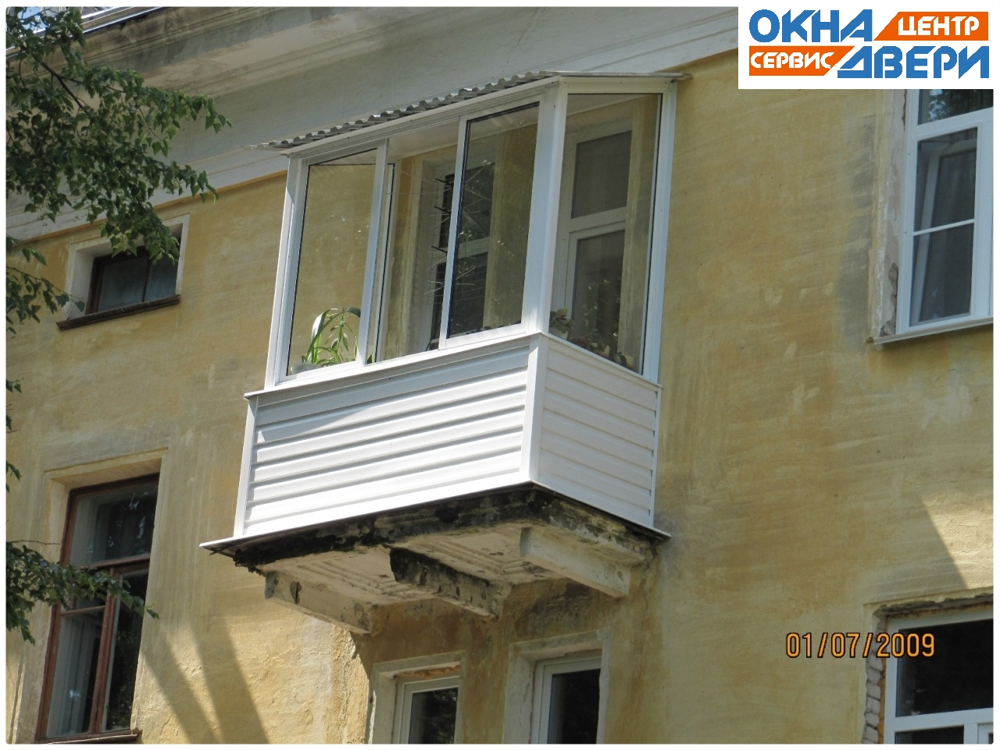
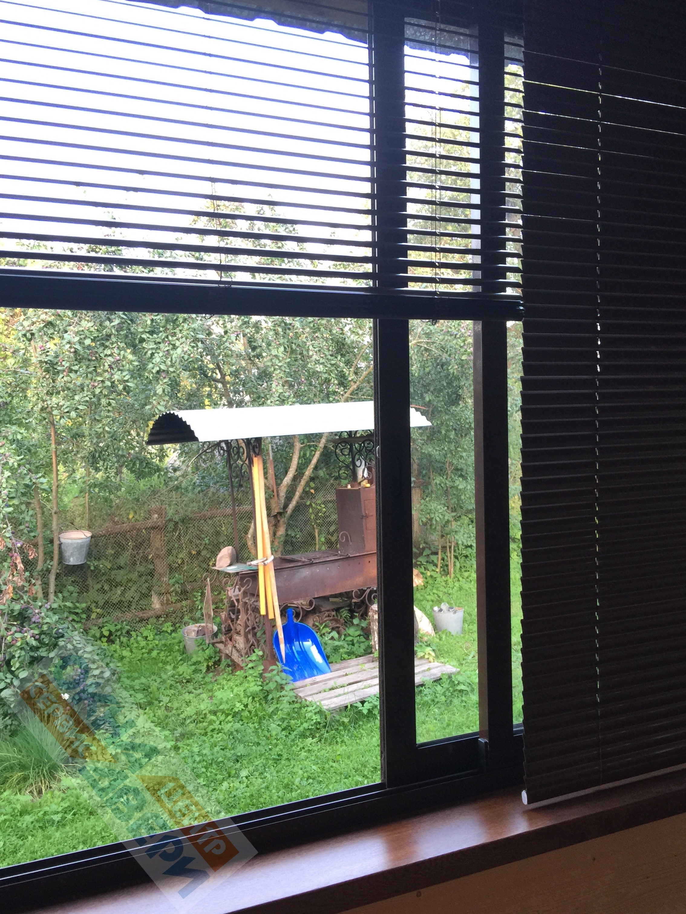
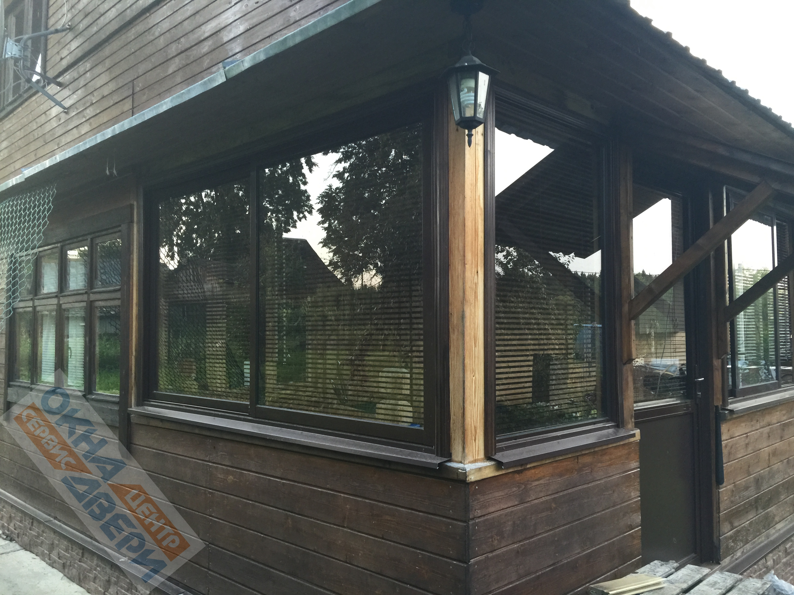
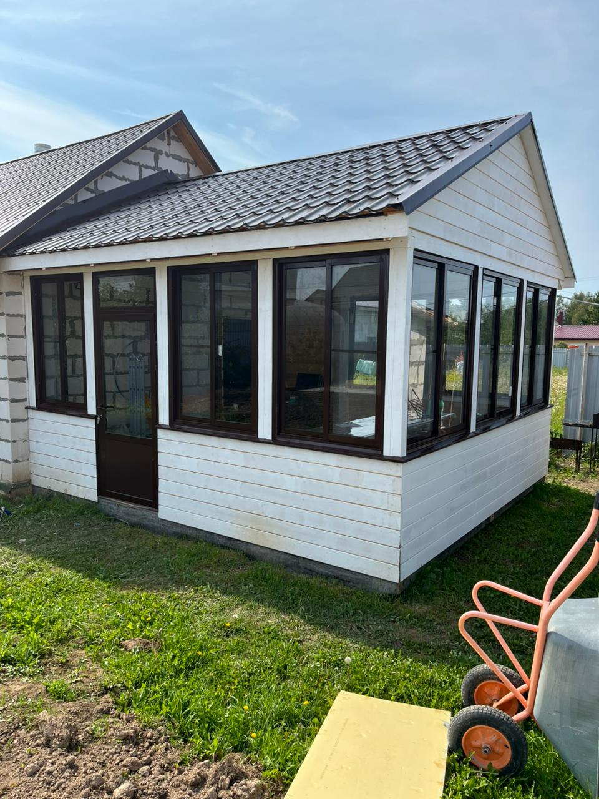
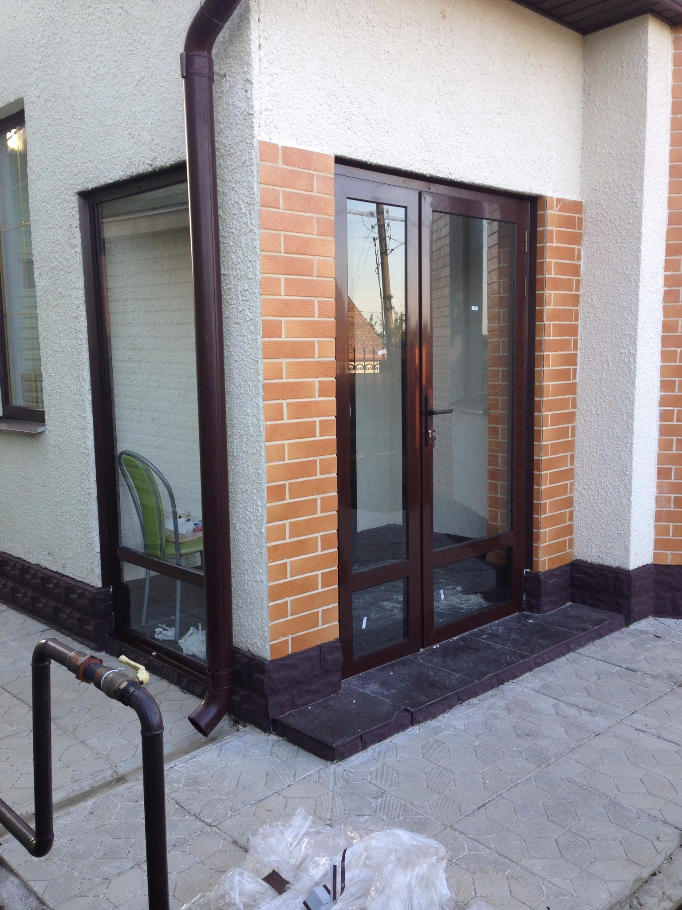

Что остекляем алюминием
Раздвижные и распашные конструкции любой сложности — от типовых балконов до панорамных террас

Балконы
Классическое раздвижное остекление для типовых балконов. Створки не съедают пространство, легко моются. Подходит для хрущёвок и новостроек.

Лоджии
Остекление по периметру или только фасадной части. Раздвижные створки от стены до стены — максимум света, минимум рам.

Террасы
Панорамное остекление террас загородных домов. Летом — открыли и наслаждаетесь свежим воздухом. Зимой — закрыли и защитили мебель.

Веранды
Превратите открытую веранду в уютное пространство. Алюминиевое остекление сохраняет вид на участок и защищает от непогоды.

Офисные перегородки
Зонирование офисов, кафе, торговых площадей. Стильно, быстро, без капитального ремонта. Глухие, со стеклом или комбинированные.

Нестандартные проекты
Остекление сложных проёмов, эркеров, козырьков. Проектируем по вашим размерам — без ограничений по конфигурации.